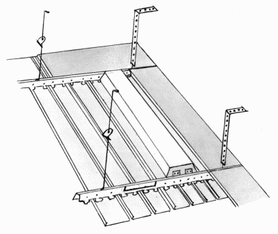
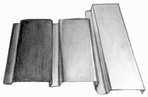
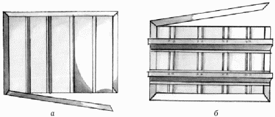
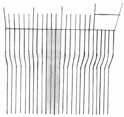

Устройство реечных потолков.

Реечный подвесной потолок (рис. 33) состоит из алюминиевых реек, загнутых по бокам. В основном в продаже бывают рейки длиной 3 и 4 м. В некоторых фирмах имеются специальные режущие станки, с помощью которых можно отрезать рейку любой длины.

Рис. 33. Устройство реечного подвесного потолка.
Ширина реек – 9, 10, 15, 20 см. Следует сказать, что чаще всего приобретают 10-сантиметровые рейки.
Другим важным параметром реек для подвесного потолка является их толщина. Справедливо заметим, что чем толще рейка, тем надежнее будет ваш потолок. Самая подходящая толщина для реек – 0,5 мм: этого будет достаточно для того, чтобы потолок не деформировался. Если рейки более тонкиме, потолок может погнуться и на нем будут заметны вмятины.
Рейки для подвесных потолков бывают трех типов:
– открытые;
– закрытые;
– со вставками.
Закрытые рейки (рис. 34) крепят встык, заводя друг за друга, в то время как между открытыми рейками остается небольшой зазор, который, однако, не заметен, если потолок высокий – около 5 м.

Рис. 34. Типы закрытых реек для подвесного потолка.
Рейки со вставками (рис. 35) немного напоминают открытые, только расстояние между рейками прикрывают узкие алюминиевые полоски.

Рис. 35. Рейки со вставками: а – изнаночная сторона; б – лицевая сторона.
Рейки бывают самых разнообразных цветов, однако до сих пор самым популярным цветом остается белый.
При покупке потолка обращают внимание на то, чтобы рейки были упакованы в полиэтиленовую пленку, защищающую материал от царапин и повреждений во время транспортировки.
Качественный товар продается именно так. Если потолок не упакован, имеет смысл отказаться от покупки. Все уважающие себя фирмы выпускают потолки на продажу только в полиэтиленовой упаковке.
Фирмы – производители реечных подвесных потолковНа российском рынке строительных материалов первое место среди подвесных реечных потолков занимает голландская фирма „Luxalon“ (рис. 36). Реечные потолки этой фирмы сделаны из 0,5-миллиметрового алюминия.

Рис. 36. Реечный потолок „Luxalon“.
Сравнительно недавно появилась на рынке стройматериалов продукция немецкой фирмы „Geipel“ и довольно быстро завоевала одно из ведущих мест. Не так давно были популярны итальянские потолки фирмы „Catena“. Однако после того, как российские производители стали выпускать потолки аналогичного качества, только по более низкой цене, потолки „Catena“ остались невостребованными.
Реечные подвесные потолки стали производить и в России. Фирма „Албес“ выпускает потолки на импортных станках с использованием итальянской и германской алюминиевых лент. Данные отечественные потолки ни в чем не уступают зарубежным аналогам.